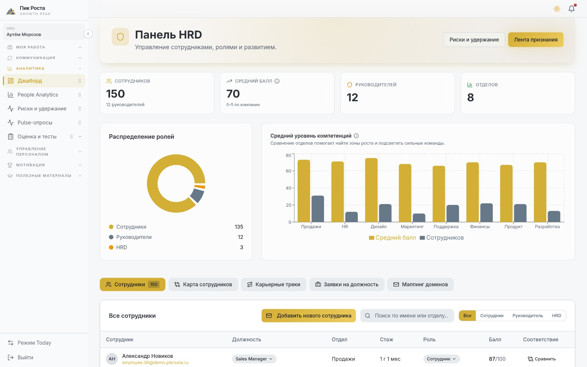
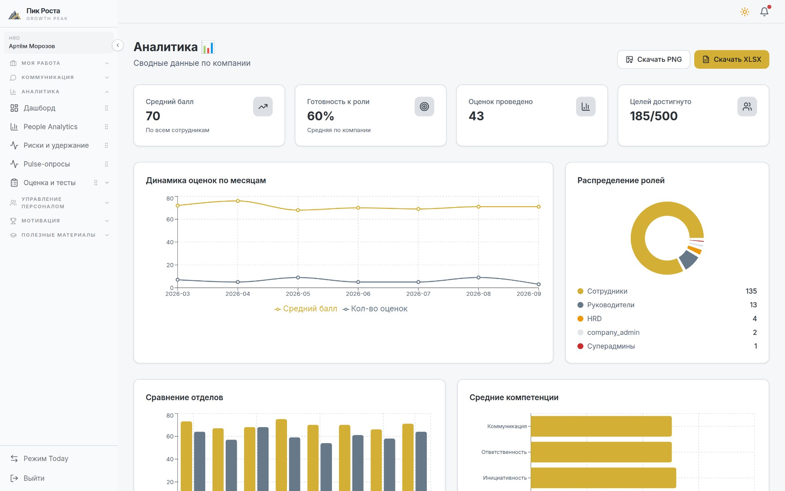
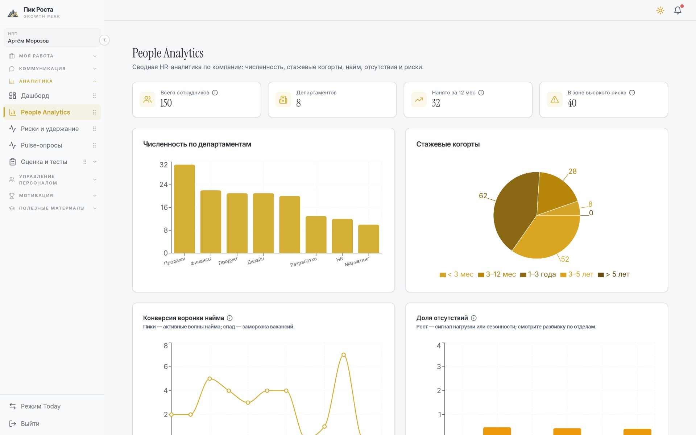
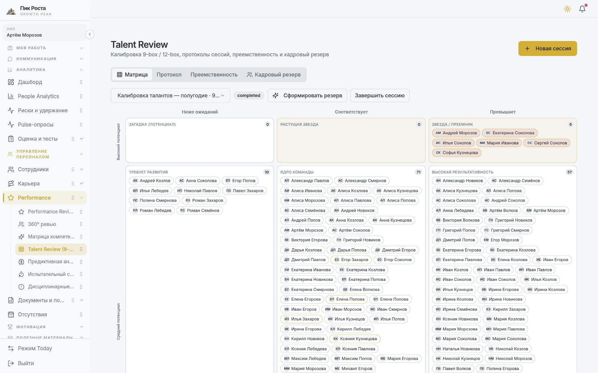
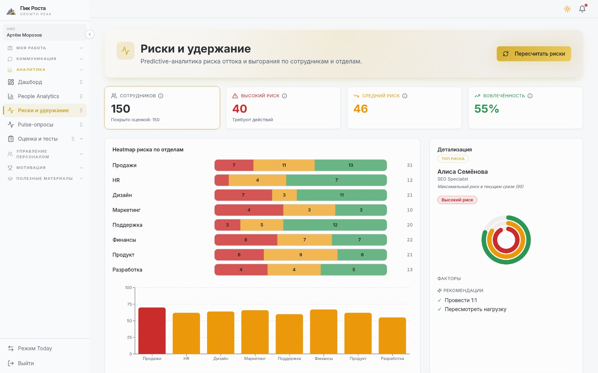

Платформа собирает карьерное развитие, оценку компетенций, кадровый резерв и удержание в одной системе — и отдаёт руководству готовые цифры, а не выгрузки, которые ещё надо свести вручную.
Каждая задача разобрана одинаково: как процесс устроен сегодня, что предлагает система и что меняется в работе HR-команды. Экраны на слайдах — рабочий интерфейс на демо-данных.
Один профиль сотрудника вместо пяти несвязанных систем.
Дашборд, который уже является отчётом, с выгрузкой в один клик.
Путь от компании до конкретного сотрудника без новых выгрузок.
Эталон должности, измеренный разрыв и маршрут к нему.
Риск-модель и признание вместо разбора причин после ухода.

Панель HRD: численность, средний балл, распределение ролей и уровень компетенций по отделам — на одном экране, без сборки отчёта.
HR-команда перестаёт быть интегратором между системами. Один источник данных о человеке — значит, нет расхождений между тем, что видит сотрудник, его руководитель и вы.

Аналитика: сводные показатели, динамика оценок и сравнение отделов. Кнопки выгрузки в PNG и XLSX — прямо на странице.
Подготовка к встрече с руководством занимает минуты вместо дней, а цифры актуальны на момент открытия. Методика расчёта одна и та же от квартала к кварталу — значит, динамику можно сравнивать.

People Analytics: численность, стажевые когорты, воронка найма и доля отсутствий — с переходом вглубь до сотрудника.
На вопрос «что происходит в отделе и кто там тянет команду вниз» вы отвечаете в момент, когда его задали. Разговор с линейным руководителем идёт по одним и тем же измеримым данным, а не по взаимным впечатлениям.

Talent Review: калибровка 9-box, протокол сессии, преемственность и кадровый резерв — вместо файла со списком фамилий.
Резерв становится живым: в любой момент видно, кто и на сколько процентов готов к конкретной должности и что осталось закрыть. Часть внешнего подбора заменяется внутренним продвижением.

Риски и удержание: heatmap риска по отделам, сотрудники в зоне высокого риска и карточка человека с факторами и рекомендациями.
Вы вмешиваетесь до того, как человек принял решение уйти, и делаете это адресно — с конкретной причиной и конкретным действием. Признание становится регулярным механизмом лояльности.
Настройка идёт последовательно: каждый следующий шаг опирается на данные предыдущего. Это реальный порядок мастера настройки компании в системе.
Структура должностей и отделов компании.
Эталоны должностей и материалы для оценки.
Маршруты развития между должностями.
Механика признания и вознаграждения.
Запуск на пилотный отдел, затем на компанию.
Пилотный отдел проходит полный цикл: эталоны должностей → оценка → карьерные треки → ревью. После этого метрики «до» и «после» сравниваются на одних и тех же данных.
Предлагаю запустить платформу на одном подразделении и через полный цикл оценки сравнить результат с тем, как этот же процесс идёт сегодня.
Экраны в презентации — рабочий интерфейс системы на демонстрационной компании. Числовые значения приведены как пример представления данных и не являются реальными показателями компании.